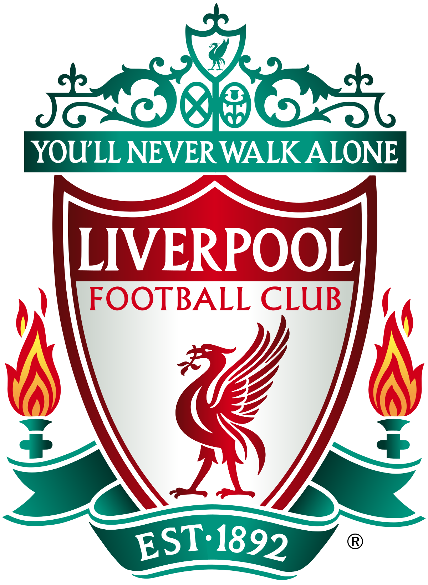

| Arsenal Club is It is located in North London was founded in 1886 in Woolwich, southwest London, Under the name "Dial Square" by a group of workers who were working on the railway Arsenal moved north in 1913 to Highbury. Then to their new stadium, the Emirates Stadium, in May 2006 in Holloway, French coach Arsene Wenger, who supervised the team's training from September 1996 until the summer of the 2018 season, is considered the legendary coach of Arsenal and one of the greatest coaches in the history of the English Premier League by virtue of the long period he spent with the team for more than two decades, and his leadership of the Gunners to achieve many championships and achievements. In 2006, it became the first London club to reach the Champions League final its won the English Premier League title 13 times, the FA Cup 14 times, and once the European Cup Winners’ Cup, which was later renamed the European Union Cup. |

|
Chelsea Club is located in Fulham, London. The club was established on March 10, 1905. The team has been playing since its foundation at Stamford Bridge, The club achieved its first success in 1955 by winning the league championship, followed by winning the cup several times. The team has enjoyed a prosperous period of success during the last two decades, winning fifteen titles since 1997. At the domestic level, the team has won the English Premier League title 6 times, the FA Cup 7 times, the League Cup 5 times, and the FA Shield 4 times. times. On the continental level, the team won the European Cup Winners' Cup twice, the European Super Cup twice, the European League twice, and the European Champions League twice. Chelsea is the only London club to win the Champions League, and the only British team to win the three major European championships, in addition to being the first team to win the two major European championships together. |

|
| Liverpool FC was founded on March 15, 1892, in Liverpool, Merseyside, England, The team is famous for its red colors, which is why it is called the "Reds". It won 14 titles on the level of the European continent, where it won more European titles than any other English club, after achieving the European Champions League title 6 times, the last of which was in 2019, and won the European Cup 3 times. He also won the European Super Cup 4 times, and won the Club World Cup once. Domestically, Liverpool is the second most English club to win the league title with 19 championships, behind Manchester United, who won the league title 20 times. Liverpool also won a single Lancashire League championship in 1892, and won the Second Division title 4 times. the team won 16 titles in the FA Shield, 8 titles in the FA Cup, and 9 titles in the English League Cup. This brings the total number of his domestic championships to about 56 titles. |

|
Manchester City Football Club was founded in 1880 as St. Mark's and then changed its name to Ardwick Association Football Club in 1887. The club was given its current name on 16 April 1894. The club moved To the City of Manchester stadium in August 2003, leaving the Maine Road stadium, which he had been playing in since 1913. The most successful period for the club was the late sixties and the beginning of the seventies by winning the English First Division, the FA Cup, the League Cup and the European Cup Winners Cup, After losing the 1981 FA Cup final, the club began to decline, and reached the peak of its relegation to the English third division for the first time in its history in 1998. After that, the club regained its status in the Premier League, the club was bought (Abu Dhabi United Group for Development and Investment) and the club became one of the richest clubs in the world In 2019, it became the first English team to achieve the historic treble in one season in the history of English football. |

|
| Manchester United founded in 1878 And this club was then in the name of Newton Heath Lancashire and Yorkshire Railway and it was founded by a group of railway workers in Manchester and the name was then shortened to Newton Heath and joined the Premier League in 1892 The club faced bankruptcy in 1902 is one of the oldest and most distinguished clubs in the world and one of the most successful English and international teams in history. Its stadium is Old Trafford (Dream Theater) in Manchester, England. He won many cups in English football, and this includes the record number of English Premier League titles, which is 20 titles, 12 titles from the FA Cup, 5 titles from the English Professional League Cup, as well as 21 titles in the FA Shield The club also won 3 UEFA Champions League titles and 1 each of these cups: the European League, the European Cup Winners' Cup, the European Super Cup, the Intercontinental Cup and the Club World Cup. Its current owner is Malcolm Glazer. |

|
Tottenham Club was founded on September 5, 1882 under the name of Hotspur Club, and it is located in the north of the English capital, London. The team has moved its official matches from White Hart Lane Stadium to the grounds of its Tottenham Hotspur Stadium, since April 2019, Tottenham won the FA Cup for the first time in 1901, thus becoming the first team not included in a football association to win the FA Cup, since the establishment of the Football League. It is the first to achieve the English Premier League and the FA Cup double in one season, the 1960-61 season, and it is the first British team to achieve a European championship when it achieved the European Cup Winners' Cup in 1963, It is the first to achieve the European League title in 1972. It is also the most English team reaching the European League final 3 times (in partnership with Liverpool FC), and it is the first London team to participate in the European Champions League, and the first London teams to reach the Champions League semi-finals in 1962 and The last in 2019. |

|